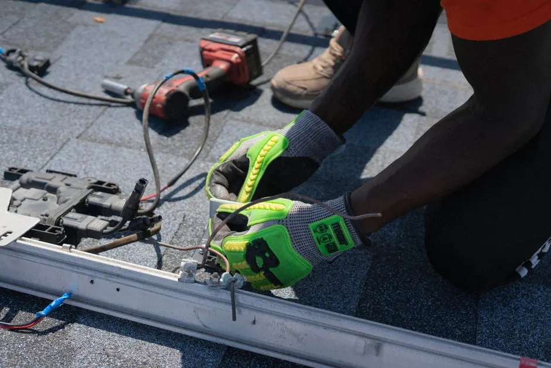
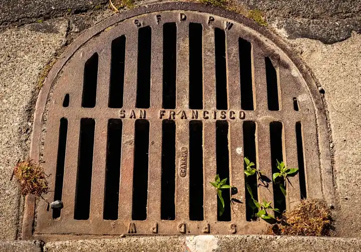

Main Line Drain Cleaning
When several drains back up at once, thorough main line cleaning is required to restore flow. We look inside the line with a camera, find the cause, and clear it with the right tool. For the full list of what we do, see our drain cleaning in Naples, FL page.
Clear arrival timeUpfront optionsBacked workmanship
What's Included in Mainline Drain Cleaning
A central mainline visit covers internal camera diagnosis, clearing the building trunk line, and confirming all connected fixtures drain freely.
Camera Scoping
We send a specialized color camera through your indoor cleanout to find where the central building drain is choked.
Trunk Line Clearing
We clear compacted wipes, grease, and domestic solids using heavy-duty mechanical augers or tailored water flushing.
Multi-Fixture Verification
We flush connected toilets, sinks, and showers simultaneously to confirm the entire central line is flowing.
Prevention Guidelines
We show you how to protect your interior building drains from wipe jams and grease buildup.
Understanding Mainline Drain Cleaning in Naples, FL
The main building drain is the central interior trunk line beneath your slab that collects wastewater from all bathrooms, kitchens, and laundry hookups before sending it outside.
When a blockage forms in this central artery, wastewater cannot escape the home. Toilets bubble when washing machines drain, and bathtubs fill with graywater. Homeowners searching for dependable assistance with a main line drain near me receive prompt diagnosis from our technicians, who access cleanouts or vertical stacks to clear the obstruction.

How we workWe verify the cause, compare realistic options, and confirm the repair before we leave.
How Mainline Drain Cleaning Works
Here is how our main line cleaning process clears whole house central drain lines step by step.
Cleanout Access and Camera Scan
We access your primary building cleanout and run a high-definition camera to locate the exact stoppage.
Method Selection
We select heavy-duty continuous cables or high pressure jetting suited for your home's indoor pipe material.
Trunk Obstruction Clearing
Our technicians clear compacted wipes, scale, and heavy grease accumulation from the main trunk.
Post-Clearing Video Scan
We run the camera a second time to ensure the pipe walls are clean and the obstruction is fully gone.
Multi-Drain Flow Test
We test multiple fixtures across the home to verify complete whole-house drainage restoration.
Tools and Technology for Mainline Drain Cleaning
Specialized commercial machines designed for heavy residential building drains.
Rigid Drum Augers
Heavy continuous-feed steel cables that power through thick paper, wipe, and sludge blockages.
Color Inspection Cameras
Self-leveling fiber-optic cameras that navigate tight 3-inch and 4-inch building drain bends.
Hydro Jetters
Precision high-pressure water nozzles that scour grease and mineral scale off indoor pipe walls.
Digital Line Transmitters
Sondes that pinpoint the exact depth and location of under-slab building drain stoppages.
When to Call for Mainline Drain Cleaning in Naples
Recognizing the warning signs of a central building drain stoppage.
Gurgling throughout the home
Air bubbles escaping through toilet bowls or sinks indicate negative pressure in the main building drain.
Washing machine overflow
Sudden high-volume laundry discharge backing up into nearby tubs or floor drains.
Problems Solved by Mainline Drain Cleaning
Resolving whole-house drainage bottlenecks for homeowners and residential properties across Naples.
Whole-house drainage stoppage
Clearing the central trunk line lets all bathrooms, kitchens, and laundry drains flow freely.
Gurgling toilets and fixtures
Clearing air locks and dense sludge restores proper atmospheric venting and flow.
Sewage rising in ground-floor showers
Opening the main collector pipe relieves pressure on the lowest residential drain fixtures.
Mainline Drain Cleaning Pricing
PRICE BEFORE WORK
Severity and length
Distance to the blockage and obstruction density determine tool and time requirements.
Access points
Ground level accessible cleanouts offer the lowest cost; roof vent or toilet pulls involve extra setup.
Cleaning method
Cabling and hydro jetting take different time and equipment, so the price can differ.

What causes mainline drain clogs in Naples?
Mainline drain clogs in Naples are often caused by invasive tree and palm roots, heavy grease buildup, flushed foreign debris, and shifting coastal soils creating pipe sags.
How much does mainline drain cleaning cost in Naples?
Costs depend on how far the blockage is, where the cleanout is, and whether the line needs a cable or hydro jetting. We inspect the line and give you a price before we start.
When should I schedule mainline drain cleaning in Naples?
You should schedule mainline drain cleaning whenever multiple fixtures back up simultaneously, toilets gurgle when showers run, or sewage odors emerge from floor drains.
How can I tell if I need mainline drain cleaning?
Signs of a mainline drain clog include water backing up into tubs when flushing, slow drainage throughout the entire house, and wastewater overflowing outside cleanouts.
Related Services
Sewer Cleaning
Sewer cleaning clears the line that carries waste from your home to the city main or septic system.Hydro Jetting
Hydro jetting uses high pressure water on grease, scale, sand, and roots.
Drain Pipe Repair
Drain pipe repair fixes cracked or broken pipe that cleaning alone cannot fix.Backed Up in More Than One Drain?
Call us and we will look inside the main line first, then tell you the right fix.

Request Mainline Drain Cleaning
Call or email us about a clogged drain or a sewer backup. We reply as soon as we can.